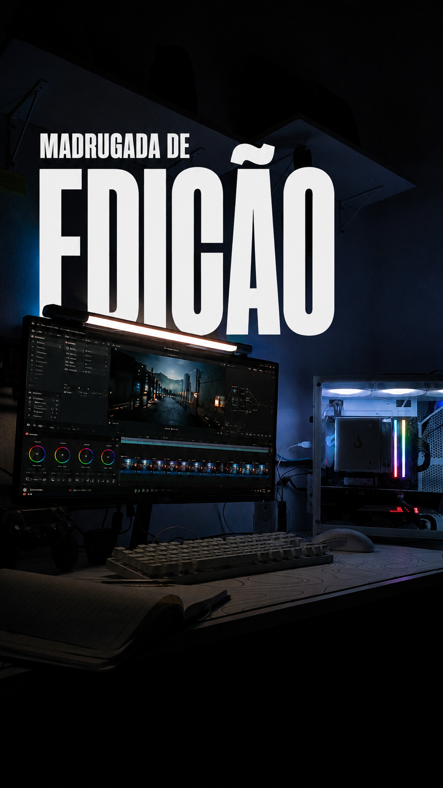
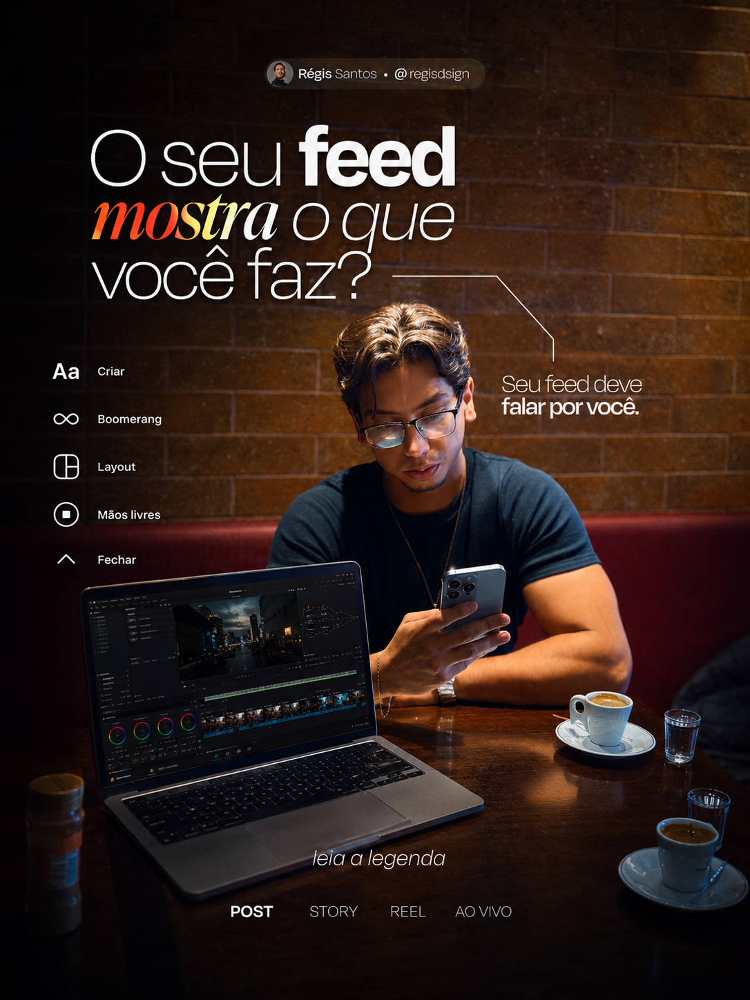
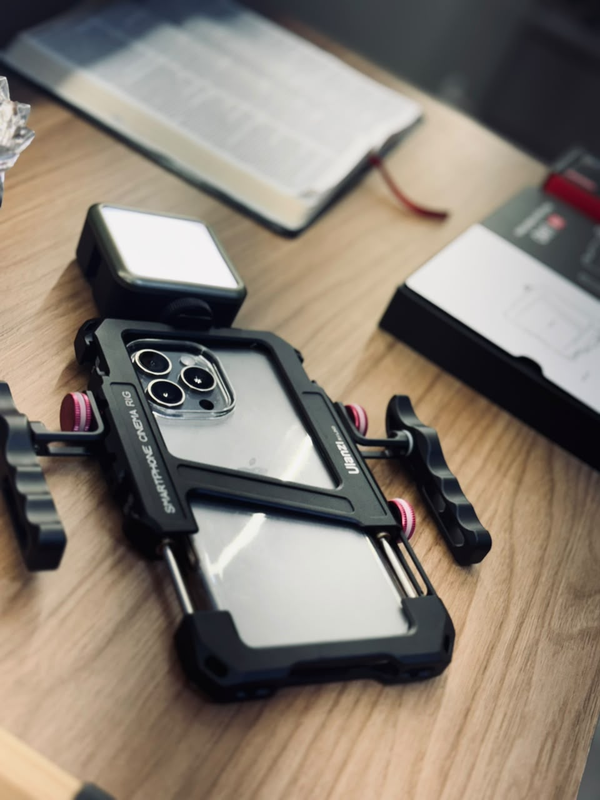
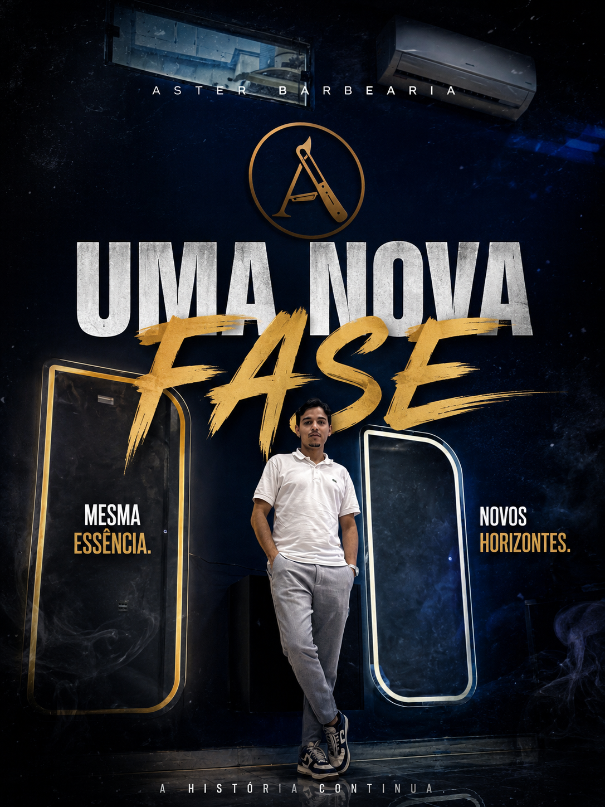
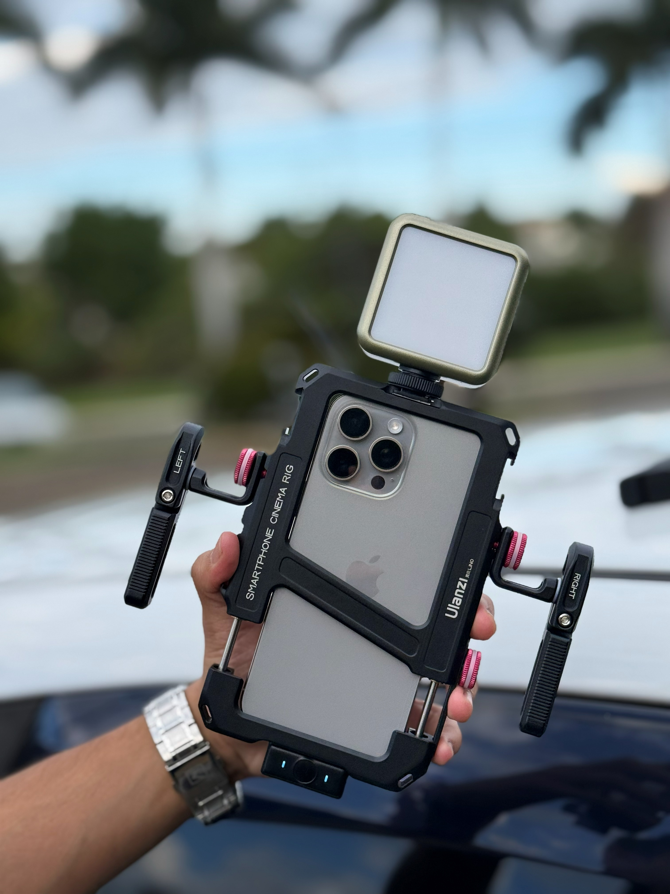
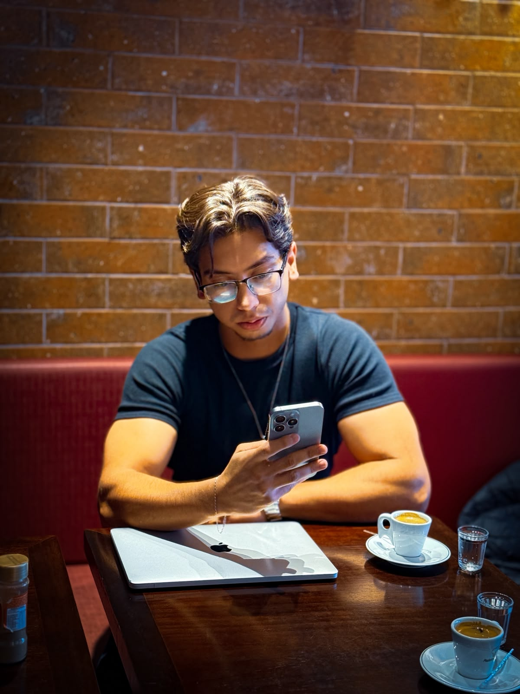

Edição de Reels
Cortes dinâmicos, legendas, ritmo, trilha, transições e acabamento para conteúdo vertical.
Videomaker • Editor de vídeos • Estratégia digital
Produção e edição de conteúdos para marcas, profissionais e empresas que precisam comunicar valor, ganhar atenção e transformar audiência em resultado.
Posicionamento
Atuo como videomaker e editor de vídeos com visão estratégica, unindo estética, narrativa e ritmo para criar peças que funcionam no ambiente digital.
Como parceiro da Vertix Growth | Marketing, meu foco é entregar vídeos que não sejam apenas bonitos, mas que comuniquem posicionamento, produto, autoridade e intenção comercial com clareza.
Parceria estratégica
O nosso negócio é vender o seu. A Vertix Growth combina marketing, posicionamento e conteúdo para transformar empresas em marcas mais visíveis, desejadas e preparadas para crescer no digital.


Serviços
Cortes dinâmicos, legendas, ritmo, trilha, transições e acabamento para conteúdo vertical.
Captação de imagens para marcas, bastidores, eventos, produtos e presença digital.
Vídeos com direção de mensagem, estrutura de retenção e foco em percepção de valor.
Títulos, textos, chamadas e elementos visuais com estética premium e leitura rápida.
Materiais para lançamentos, campanhas, institucionais curtos, tráfego e redes sociais.

Direção visual
Essa imagem traduz a rotina por trás de cada vídeo: atenção aos detalhes, análise de cor, cortes precisos e dedicação até o material chegar no ponto certo para publicar. É sobre transformar horas de edição em conteúdo com presença, ritmo e intenção.
Portfólio
Os cards abaixo já estão preparados para receber links de Instagram, vídeos hospedados ou arquivos próprios conforme você for enviando o material.

Instagram em breveSocial media
Vídeos curtos com narrativa objetiva, estética forte e foco em retenção.

Assistir no InstagramCaptação
Imagens de apoio, cenas de processo e captação estratégica para revelar bastidores, construir autoridade visual e aproximar a marca do público.

Assistir no InstagramEdição
Legendas, cortes, títulos e composição conectados por storytelling para prender atenção, criar contexto e gerar impacto nos primeiros segundos.
Processo

Entendimento do objetivo, público, canal, mensagem principal e estilo visual desejado.
Organização das imagens, definição dos melhores momentos e direção do conteúdo.
Corte, ritmo, cor, som, legendas, títulos e ajustes para deixar o vídeo pronto para publicação.
Contato
Envie sua ideia, referência ou material bruto. A partir disso, estruturamos o formato, o estilo de edição e o melhor caminho para transformar o conteúdo em peça estratégica.
